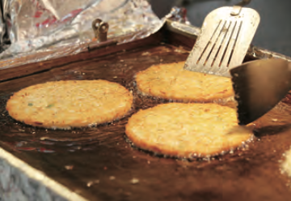
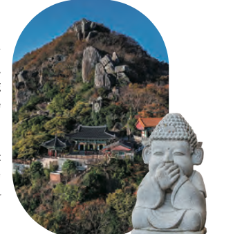

Seoul
Gwanghwamun
Sitting in front of Gwanghwamun Gate, the main gate of
Gyeongbokgung Palace, major political and administrative offices
were situated in the area during the Joseon era. However, today
it has been transformed into a cultural hub for both locals and
tourists. The plaza features statues honoring 2 of Korea's most
iconic figures, King Sejong the Great and Admiral Yi Sun-sin.
Bukchon Hanok Village
This was the residential area for royalty and high-ranking
officials during the Joseon Dynasty. It is a quintessential
enclave in Seoul characterized by elegant hanok (traditional
Korean houses). Visitors can try on hanbok (traditional Korean
clothing) and partake in various traditional activities. Many
hanoks were renovated into cafés, restaurants, and
guesthouses.
Myeong-dong
This bustling downtown district in Seoul is known for its
department stores, shopping malls, fashion boutiques, and
cosmetics shops. It is a 1-stop shopping destination with
delicious food stalls lining the main street.
Samcheong-dong
Located between Gyeongbokgung Palace and Bukchon Hanok Village,
this neighborhood blends antique hanoks with chic contemporary
buildings. The area is filled with cozy cafés and restaurants,
and a collection of museums and galleries.

Gwangjang Market
This is Korea's 1st permanent traditional market that dates
back to more than 100 years. The renowned food alley offers an
array of delectable treats, including mini gimbap, bindaetteok
(mung bean pancakes), and yukhoe (beef tartare).

Tongin Market
At this traditional market, visitors can buy old coins of the
Joseon era called "yeopjeon." These coins can be used to buy
various foods and snacks. Oil tteokbokki is the most popular
dish at Tongin Market available in 2 variations: spicy gochujang
and savory soy sauce.
Namsan Seoul Tower
Sitting atop Namsan Mountain, this is a symbolic landmark of
Seoul. Namsan Seoul Tower, which has been introduced in
numerous Korean TV shows and dramas, is best known for the
"love locks." The observatory offers exceptional views of
Seoul, and is especially beautiful at night.
This traditional market in Seoul dates back over 6 centuries. It
houses some 10,000 stores selling pretty much everything. There
is a famous saying that goes “if you can't find it in Namdaemun
Market, you won’t find it anywhere else in Seoul.” The food
alleys, including Galchi Alley, which serves various galchi
(cutlassfish) dishes, and Kalguksu Alley, serving kalguksu
(noodle soup), bibimba
Jamsil lottetower
With 123 stories reaching a height of 555 m, this is the
tallest building in Korea and 5th tallest in the world. It
houses shopping facilities, an aquarium, concert hall, movie
theater, restaurants and much more. Seoul Sky is the
observatory offering stunning views of Seoul from 500 m above
ground, and Sky Deck is the world’s highest glass- floored
observatory recognized by the Guinness Book of Records.
Busan
Haeundae Beach
This is a representative of beach of Busan that stretches
approximately 1.5 km. With average depths of around 1 m, it is
an ideal for swimming. Haeundae is lined with many fancy and
tall buildings, such as luxury hotels and shopping facilities,
that create a stunning skyline.
Gwangalli Beach
Offering spectacular views of Gwangandaegyo Bridge, a defining
symbol of Busan, Gwangalli Beach is a vibrant hub featuring
trendy restaurants, cafés, and bars. During the summer months,
visitors are treated to an array of wet and wild activities
like jet boats, banana boats, and surfing.
The Bay 101
This cultural complex is located by the entryway of
Dongbaekseom Island. It houses a yacht club, allowing visitors
to enjoy the serene waters of Haeundae Beach aboard a yacht,
as well as a home décor store, restaurant, bakery, coffee
shop, and bar.
Haeundae Blueline Park
An old railroad facility was repurposed into a tourist train
that travels along a 4.8-km coastal track from Haeundae Beach
to Songjeong Beach. All the seats on the Beach Train face the
ocean so that every one can enjoy the view. For those who
prefer a more private experience, the Sky Capsule can
accommodate up to 4 people.
Busan Cinema Center
This multi-cultural complex offers an immersive experience that
encompasses movies, performances, exhibitions, and more. It’s
the venue for major events such as the opening and closing
ceremonies of the Busan International Film Festival, a cinematic
extravaganza held every October. The center is also celebrated
for its distinctive architecture, especially the expansive roof
that shelters the outdoor square. By night, the roof is adorned
with an array of lights that create a rainbow of colors.
Huinnyeoul Culture Village
This village is located on the coastal cliffs of Yeongdo
Island. The refreshing ocean lies beyond the walls of the
village, and the alleyways are home to quaint cafés and
workshops. Huinnyeoul Coastal Tunnel, the rainbow-colored
stairs, and Isongdo Observatory are popular photo spots.
Gamcheon Culture Village
Nestled on a steep hillside, a modest settlement established
by Korean War refugees was transformed into one of Busan's
most captivating tourist destinations through an urban renewal
project. Visitors can stroll the winding alleys adorned with
whimsical murals and quaint shops.
Jeju
Hallasan National Park
This park surrounds Hallasan Mountain at the center of Jeju
Island. At 1,947 m above sea level, Hallasan is the highest peak
in Korea formed through volcanic eruptions, resulting in a
volcanic topography that includes the Baengnokdam Crater Lake at
its summit and the steep Yeongsilgiam Cliff. The diverse
altitudes host various types of vegetation, leading to its
recognition as a UNESCO Biosphere Reserve, World Heritage, and
Global Geopark. Hallasan is covered in pink azaleas in spring,
vibrant gold and crimson foliage in fall, and glittery white
snow in winter.
Osulloc Tea Museum
This is Korea's 1st tea museum dedicated to introducing and
promoting its tea culture. It exhibits traditional tea-making
tools, and visitors can also sample teas made using modern
tools and methods. The museum's café serves various green tea
infused desserts and beverages, such as green tea latte, ice
cream, and rolled cake. The green tea field outside the museum
provides a stunning landscape.
Jeju Folk Village
This charming portrayal of life on the island during the 1890s
features about 100 traditional houses divided into 3
sections—mountain village, hilly village and fishing village.
Visitors can partake in various folk games, and experience
punishments of the Joseon era. Special night hours are offered.
Seongsan Ilchulbong
Tuff Cone
Tuff Cone
This UNESCO World Heritage-designated tuff cone rising 180 m
high was created by an underwater eruption approximately 5,000
years ago. At its peak lies a crater 600 m in diameter covered
with lush greenery and silver grass. Living up to its name, it
is the best sunrise spot in Jeju.
Sangumburi Crater
During its early volcanic activity, the crater was formed
without the eruption of lava or volcanic ash, resulting in a
crater measuring approximately 300,000 m2. Various tree species
including evergreen, deciduous, broad-leaved, and coniferous
trees, as well as rare plants occupy the crater, and in fall,
the crater transforms into a stunning sight of golden silver
grass.

Bijarim Forest
This forest is home to collection of some 2,800 trees that are
500 to 800 years old. It is exceptionally rare and often
referred to as the "1,000-year forest" for preserving scenery
akin to the world's ancient beginnings. There are 2 trails
that explore the forest. Trail A provides easy access even for
strollers and wheelchairs, and Trail B features a gravel path
through the dense forest.
This cultural district is popular among foreign tourists.
Must-see attractions include traditional eateries, antique
shops, Ssamziegil, which is a cluster of quirky workshops, and
Anyoung Insadong, a hub of character shops, galleries, and
hotels.

Ikseon-dong Hanok Street
This area is characterized by its narrow alleyways lined with
hanok (traditional Korean houses). It has gained popularity on
social media for the retro ambiance along with hanok cafés,
delicious restaurants, trendy select shops, and more.
Gyeongju
Daereungwon Ancient Tombs
This is a collection of 23 tombs of royalty and aristocrats of
the Silla period. Notable tombs include the Royal Tomb of King
Michu, the 13th king of Silla, and Hwangnamdaechong Tomb, which
is characterized by its distinctive camel hump-like structure.
Cheonmachong Tomb is known for its excavated painting of an
ascending white horse, and is the only tomb accessible to the
public.
Donggung Palace and Wolji Pond
This was the site of the secondary palace of the Silla Kingdom
where the crown prince resided, and also where national
celebrations were held and prestigious guests were welcomed.
The pond and 3 of the remaining 5 palace buildings were
restores, providing especially beautiful sights at night.
Bomun Tourist Complex
Circling Gyeongju's scenic Bomunho Lake, the Bomun Tourist
Complex is a tourism and recreation destination equipped with
luxury hotels, international conference facilities, and
diverse leisure and recreational amenities. Visitors can enjoy
various attractions and activities, including Gyeongju World,
an amusement park with many thrilling rides, and Gyeongju Expo
Grand Park, which features media art exhibits on the culture
of Silla, and fun non-verbal stage performances.
Bulguksa Temple
This is a testament to the brilliant Buddhist culture of the
Silla era, with several National Treasures, such as Dabotap
Pagoda and Seokgatap Pagoda, housed within the temple. Cherry
blossom trees paint the temple white and pink in spring, while
vibrant gold and crimson leaves create a breathtaking sight in
fall. Along with Seokguram Grotto, Bulguksa Temple was
designated a UNESCO World Heritage in 1995.

Yangdong Village in Gyeongju
Comprising 54 hanok (traditional Korean houses) and 110
chogajip (thatched roof houses), this historic clan village
stood for over 600 years with the original appearance
meticulously preserved. The entire village is a National
Folklore Culture Heritage, and in 2010, it was recognized as a
UNESCO World Heritage site alongside Hahoe Village in Andong.
Overnight stays and cultural activities are offered for
visitors.
Gyeongju National Museum
This museum details the 1,000-year history of the Silla
Kingdom. Among various exhibitions, the Silla History Gallery
features the ancient kingdom from its founding to the Unified
Silla period and its eventual decline, the Silla Art Gallery
displays magnificent Buddhist sculptures, and the Wolji
Gallery houses precious relics discovered in Donggung Palace
and Wolji Pond. The outdoor area also exhibits some 1,300
stone artifacts.
Jeonju & Suncheon
Jeonju Hanok Village
This is the largest hanok village in Korea, boasting over 700
traditional Korean houses called "hanok." In recent years, the
village has evolved into a vibrant tourist destination
offering a plethora of traditional and cultural experiences.
Visitors can rent hanbok (traditional Korean clothing),
indulge in traditional teas and desserts, and partake in
traditional crafts. For a truly immersive experience, hanok
accommodations are also available.

Jeonju is also known for its delicious food, and the village
is a great place to try Jeonju bibimbap, one of Korea’s most
famous dishes. Whether you're interested in history,
architecture, or just want to enjoy a peaceful stroll, Jeonju
Hanok Village is a must-visit destination in South Korea.
Gyeonggijeon Shrine
This shrine was dedicated to a portrait of King Taejo (born Yi
Seong-gye), founder of the Joseon Dynasty. Within the shrine’s
Royal Portrait Museum, visitors can find reproductions of
portraits depicting esteemed kings of the Joseon era, such as
King Taejo, King Yeongjo, and King Jeongjo. The shrine itself is
a popular photo spot within Jeonju Hanok Village for the hanok
architecture, stone wall fence and bamboo forest.
Jeonju Nambu Market
This traditional market is situated near the Jeonju Hanok
Village. The 1st floor is dedicated to shops offering a wide
range of food ingredients and everyday essentials, and the 2nd
floor is lined with eateries and workshops run by young
merchants. Every Friday and Saturday evenings a night market
offers a great variety of dishes, including local delicacies
and unique fusion creations.
Hyangiram Hermitage
Located on a cliff on the southern coast, this hermitage is
known for breathtaking sunrises. Although a bit steep, there are
7 caves on the way up, and it is said that if you pass all 7
you'll be granted a wish. Once inside, a magnificent sight
featuring the azure sea, unique rock formations, and Daeungjeon
Hall unfolds before you.

Suncheonman Wetland
Recognized as one of the world’s top 5 coastal wetlands and
enlisted as a UNESCO Biosphere Reserve, the Suncheonman
Wetland is a precious ecosystem home to numerous creatures,
including endangered species. About 245 bird species,
including some 25 rare species of the world, spend the winter
or reside here. With its vast tidal flats, expansive reed
fields, and beautiful sunsets, the wetland provides a
remarkable landscape.
Suncheonman National Garden
As the 1st national garden of Korea, this was the venue for
the International Garden Expo in both 2013 and 2023. It is
divided into several sections, including gardens of the world
and themed gardens. Visitors can see typical garden styles
from around the world, such as the United States, China,
Japan, France, and Thailand.